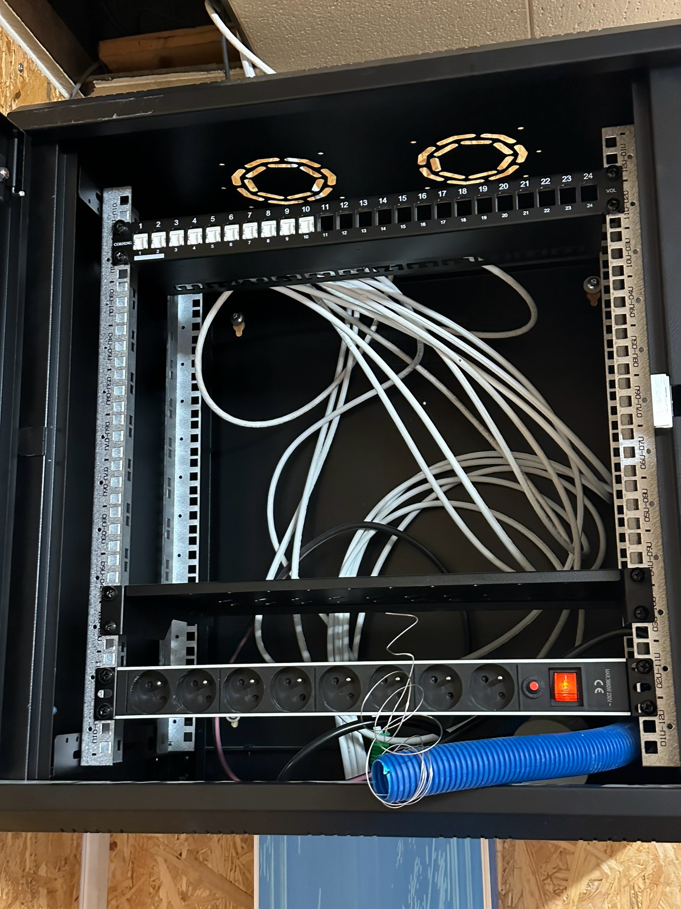
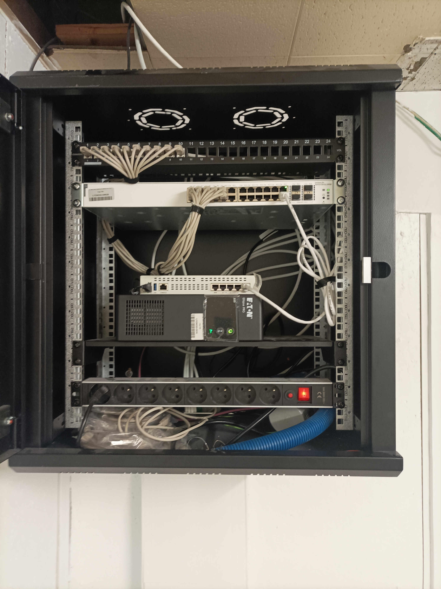

Lors de mon premier stage, j'ai réalisé un projet visant à installer une baie de brassage opérationnelle. L'objectif était de comprendre les principes techniques et organisationnels d'une infrastructure réseau complète, incluant le câblage, l'intégration des équipements, la configuration, les tests et la sécurisation du système.

Baie de brassage – avant installation des équipements

Baie de brassage – après installation et câblage complet